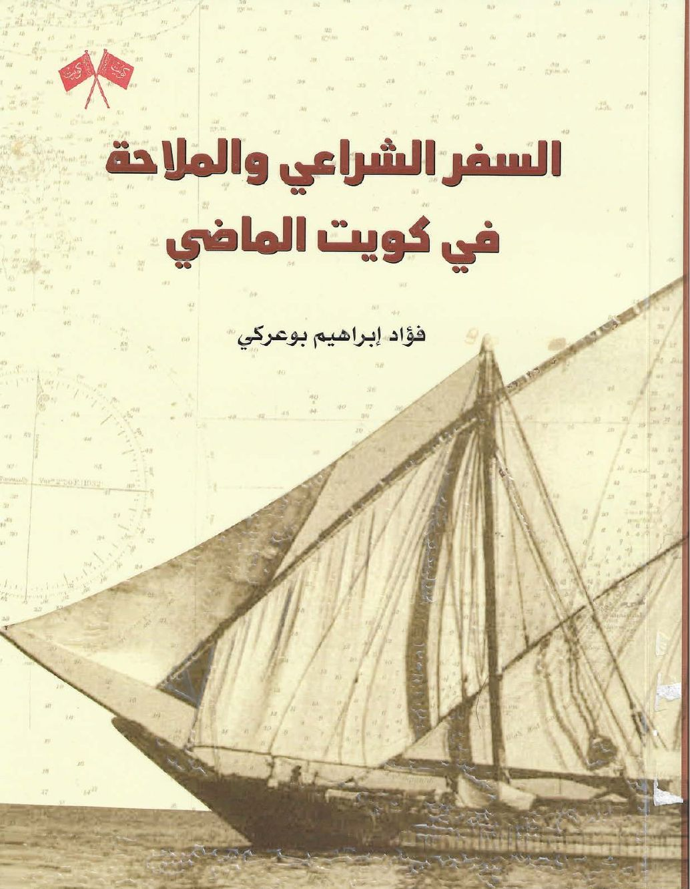
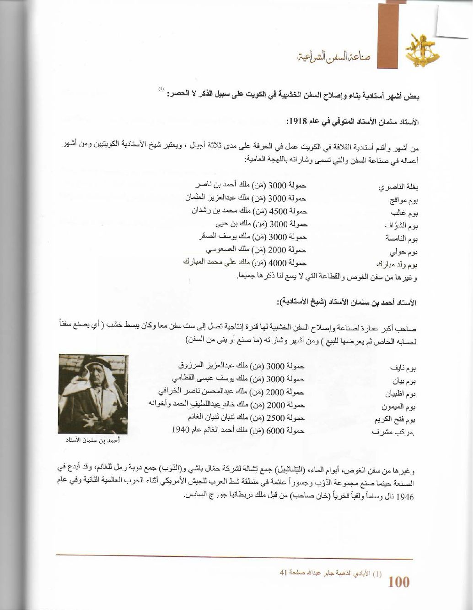

1897 to 1943 (published book) · Cover and pages 100, 101, 104, 128, 137, 160, 161, 334 and 336
Pages from Fouad Buarki's Sailing and Navigation in Kuwait's Past
What it is
Page 100: the boom Bayan, 3,000 mann, owned by Yousef Eissa Al-Qatami. Pages 101 and 104: the baghla Al-Badri, owned by Al-Qatami (the family records the owner as Abdulwahab Abdulaziz Al-Qatami), built by Ostad Mohammed Akrouf, with Ostad Abdullah bin Mohammed aboard. Page 128: the nakhudas of Al-Daw (Fateh Al-Kareem) from 1914 to 1943, the third of them Abdulwahab Abdulaziz Al-Qatami. Page 137: the Al-Qatami captains, each taught by his father, and a short life of Eissa Abdulwahab Al-Qatami, Kuwait's first rubban, with the crew of his ship in 1897. Pages 160 and 161: Eissa Abdulwahab Al-Qatami among Kuwait's early nakhudas, and Al-Qatami among the nakhuda families of Sharq. Page 334: the rescue of the boom Walad Mubarak, repaired by Nakhuda Abdulwahab Al-Qatami with Abdulwahab Al-Othman. Page 336: the Khor Mian fight of 1933, with the boom Ibn Rashdan under Nakhuda Abdulwahab Al-Qatami.
Why it matters
A published history of Kuwait's sailing ships that names four generations of Al-Qatami captains and their ships.
Page copies


Notes
Pages 334 and 336 give only «Abdulwahab Al-Qatami». They are linked to Abdulwahab Eissa because Dr Al-Hijji names him for the Walad Mubarak rescue and Ibn Rashdan was his ship. The son page 137 gives for Nakhuda Abdulla bin Abdulaziz Al-Qatami is not in our family. Abdulla's sons are Abdulaziz and Mohammed. Only the first pages are shown here. Family members who sign in can see all 10 pages.
Others named
Sources
Fouad Ibrahim Buarki, Al-Safar Al-Shira'i wal-Milaha fi Kuwait Al-Madi (Sailing and Navigation in Kuwait's Past).
How this text was made: Page copies of a published book.
Open in the interactive site